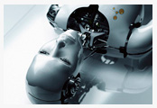
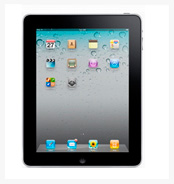
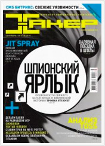

- Навигация
- Ссылка
- Ссылка
- Ссылка
- Ссылка
- Ссылка
- Ссылка
- Ссылка
- Ссылка
- Ссылка
- Ссылка
- Ссылка
- Ссылка
- Ссылка
- Популярное
- Тетрис против контры
- Хакер №9
- Перевёртыш
- 10 лучших прыжков в истории
- Расстрел мирных жителей
- Серъёзная авария
- Прыжок
- Computer Bild №17
- Креативные работы
- Комментарии
- kivavladimir
Жуткое ДТП с кострацией. Все на асфальте
- del
Смотрите на тетку на заднем плане
- nmaster
Подборка падений красивых девушек
- muzoff
Drifter
- kivavladimir
Жутка авария во время Дрифта
Бытовой робот – друг и помощник
Когда же наступят те времена, когда мы сможем сказать: «Железка, остаешься за старшего», уходя из дома или квартиры, оставив своих роботизированных домашних помощников? Возможно, этот момент уже не так далеко, как нам кажется. И наши мечты обладать личным роботом – не последствия просмотра фантастических фильмов. Ведущие разработчики г оворят, что уже через 10-15 лет робототехника выйдет на новый уровень и нам самим придётся заучивать слова команд и полировать тело роботизированных домохозяек. Но, что же сейчас, самыми явными представителями домашних помощников из мира роботов можно смело сказать – это бытовые роботы...
- Вчера 16:55
- Автор: kivavladimir
- Просмотров: 98
- Комментариев 1
NVIDIA Tegra
Компания NVIDIA всегда любила различного рода тайны, но если работаешь в сфере мобильных телефонов, то ты вынужден раскрыть все свои карты на годы вперед. Это вынуждены делать все: ARM, Texas Instruments, Qualcomm и так далее. NVIDIA только недавно объявила о процессоре Tegra 3 (кодовое обозначение Kal-El), при этом сообщив, что это четырехъядерный процессор, произведённый по 28-нм технологическим нормам с производительностью в 5 раз превышающую таковую у Tegra 2 и даже немного быстрее Core 2 Duo. Возможно, в некоторых тестах утверждение NVIDIA можно считать истиной: мобильный телефон с производительностью настольного компьютера, должно быть это здорово.
- Вчера 16:55
- Автор: kivavladimir
- Просмотров: 98
- Комментариев 1
Apple продаст более 40 млн новых планшетов
Аналитик Минг-Чи Куо (Ming-Chi Kuo) из Concord Securities в результате анализа каналов поставок сообщает, что большая часть из 5 млн iPad 2 первой партии будет оснащаться модулями 3G (либо GSM/UMTS, либо CDMA). Apple собирается продавать три версии iPad 2 — только с Wi-Fi, GSM/UMTS для AT&T и CDMA/EVDO для Verizon — они имеют кодовые имена K93, K94 и K95. Господин Куо указывает на то, что около 38% iPad 2 будет представлено моделью K93 Wi-Fi, 46% — K94 и, наконец, 16% — K95. Таким образом, Apple полагает, что большинство покупателей предпочтёт модели с поддержкой 3G. Несмотря на то, что Apple никогда не предоставляла данных по продажам отдельных моделей iPad, по ряду сведений уже сейчас доля решений с поддержкой 3G превышает показатели...
- Вчера 1:55
- Автор: kivavladimir
- Просмотров: 98
- Комментариев 1
Хакер №9
Журнал, рассказывающий о компьютерах, программном обеспечении, железе, технологиях, играх и, конечно же, о хакерах. Но на этом все не ограничивается. Также публикуются материалы о стиле жизни, о каких-то абсолютно жизненных вещах, о здоровье, о том, как провести свободное время. Издание отличается от других, наверное, в первую очередь манерой подачи материала.
- Вчера 1:55
- Автор: kivavladimir
- Просмотров: 98
- Комментариев 1